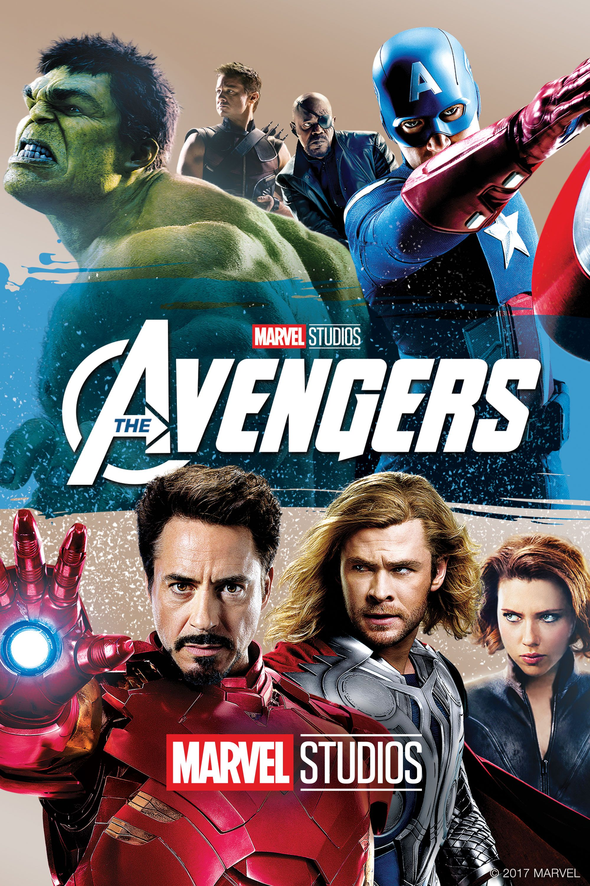

Projects

Online Movie Ticket Booking System
Description: Users can book movie tickets online by selecting movies, seats, and confirming payments.
Features: Seat selection, payment confirmation, booking history, and admin management for movies and schedules.
Technologies: HTML, CSS, JavaScript, PHP, MySQL.

Real-Time Clock Project
Description: Displays the current time in real-time using JavaScript, updating every second.
Features: Live digital display, responsive design, easy integration into websites.
Technologies: HTML, CSS, JavaScript.
Phone & Contact Information
Description: Provides easy access to my phone, email, and messaging apps for inquiries or collaboration.
Features: Clickable links to Telegram, WhatsApp, IMO, Messenger, Facebook, and Email.
Technologies: HTML, CSS.